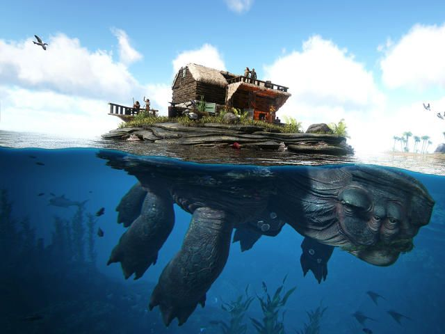

ARK: Survival Evolved, o popular jogo de sobrevivência em um mundo pré-histórico repleto de dinossauros e criaturas fantásticas, acaba de receber uma emocionante atualização de verão. A nova atualização traz uma série de novos desafios e mistérios para os jogadores explorarem enquanto lutam pela sobrevivência em um ambiente dinâmico e traiçoeiro.
,
Entre as adições mais notáveis estão três novas criaturas misteriosas que agora habitam as paisagens exuberantes e perigosas do ARK. Os jogadores terão que usar suas habilidades de domesticação e sobrevivência para conquistar essas criaturas, cada uma com suas próprias habilidades únicas que podem vir a ser aliadas valiosas na luta contra as ameaças constantes do ambiente.
Além disso, a atualização introduz novos biomas, enigmas intrigantes e desafios exclusivos que prometem manter os jogadores entretidos enquanto exploram o vasto mundo do ARK. Esses novos elementos oferecem oportunidades para aventuras emocionantes, bem como recompensas valiosas para aqueles que conseguirem decifrar os segredos ocultos.

Os desenvolvedores também abordaram várias melhorias de qualidade de vida e otimizações de desempenho, visando aprimorar a experiência geral do jogo. Desde uma IA aprimorada até novas opções de construção e personalização, a atualização de verão visa satisfazer os jogadores veteranos e novatos, oferecendo um ambiente envolvente e desafiador.
Se você é um fã de longa data ou está apenas começando sua jornada no ARK: Survival Evolved, esta atualização de verão certamente trará novos horizontes para explorar, criaturas para domar e mistérios para resolver. Prepare-se para uma emocionante aventura pré-histórica que testará suas habilidades de sobrevivência e estratégia em um mundo cheio de perigos e possibilidades.